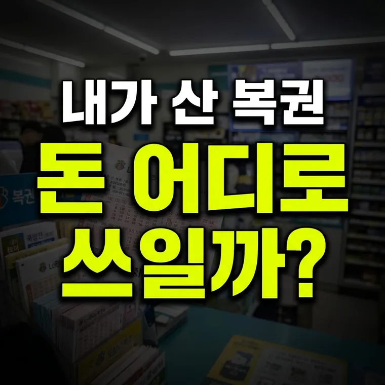

복권기금의 조성과 쓰임새: 우리가 살 때 지불한 금액은 어디로 활용될까?
2026.10.24 작성
로또 판매액의 약 50%는 당첨금으로 돌아가고, 약 42%는 복권기금으로 쌓여 법으로 정해진 공익 사업에 쓰입니다. 기금은 복권위원회가 관리합니다.

우리가 구매한 복권 금액, 어디로 흘러갈까?
매주 로또나 연금복권을 구매하며 지불하는 1,000원 혹은 수천 원의 비용은 과연 어디로 어떻게 쓰이고 있을까요? 많은 사람들이 복권 판매 수익금이 단순히 복권 발행 기관의 이윤이나 정부의 일반 예산으로 흡수되어 막연하게 사용될 것이라 오해하곤 합니다.
하지만 복권 및 복권기금법에 따르면, 복권 판매를 통해 조성되는 재원은 법적 근거에 따라 공익 사업과 소외계층 지원을 위해 배분되고 있습니다. 이번 글에서는 복권기금이 어떻게 조성되며, 우리 사회의 어떤 공익적 가치에 활용되는지 살펴보겠습니다.
복권기금의 조성 구조와 재원 마련 방식
복권기금은 복권 판매액에서 당첨금과 판매 수수료, 운영비 등을 제외한 금액을 기반으로 조성됩니다. 구체적인 자금 흐름의 구조는 다음과 같습니다.
- 복권 판매 수익금: 로또 6/45를 기준으로 1,000원짜리 복권 한 장이 팔리면, 약 50%는 당첨금으로 돌아가고 약 42%가 복권기금으로 쌓입니다. 나머지는 판매점 수수료와 운영비 등으로 쓰입니다.
- 법정 배분 구조: 조성된 복권기금은 정부의 임의적인 예산 집행이 아니라, 법률로 정해진 비율에 따라 다양한 공익 법인과 지자체에 배분됩니다. 저소득층 주거 안정 지원, 국가 유공자 복지, 문화 예술 진흥 등 다양한 분야의 재원으로 쓰입니다.
- 투명성 유지: 복권기금은 기획예산처 복권위원회가 관리하며, 집행 내역과 사업 성과가 공개되어 기금 운영의 신뢰성을 높이고 있습니다.
복권기금이 실질적으로 쓰이는 대표적인 공익 사업
우리가 산 복권의 대가는 단순히 개인의 요행을 바라는 소비에 그치지 않고, 사회적 안전망을 지탱하는 중요한 재원으로 기능합니다. 주요 활용처는 다음과 같습니다.
- 소외계층 주거 지원: 저소득층의 임대주택 건설 지원, 주거 개보수 사업, 그리고 복지 사각지대에 놓인 취약계층의 주거 환경을 개선하는 데 큰 비중으로 사용됩니다.
- 공익 복지 및 취약계층 지원: 장애인, 한부모 가족, 독거노인 등 도움이 절실한 계층을 위한 복지 시설 운영 지원과 생계비, 의료비 보조 사업에 쓰입니다.
- 문화 예술 및 장학 사업: 경제적 여유가 부족한 문화 소외계층에게 문화 예술 관람 기회를 제공하거나, 소외 청소년들을 위한 장학 사업 및 교육 프로그램 지원 재원으로 활용됩니다.
복권기금을 볼 때 알아둘 점
- 공식 자료로 확인하기: 기금의 조성 비율이나 법정 배분 구조는 해마다 달라질 수 있습니다. 정확한 수치는 복권위원회가 공개하는 자료로 확인하는 것이 좋습니다.
- 균형 잡힌 시각 갖기: 복권에는 사행성이라는 측면도 있습니다. 구매 금액의 상당 부분이 공익 사업에 쓰인다는 점은 사실이지만, 그것이 많이 사도 된다는 뜻은 아니므로 소액으로 건전하게 즐기는 것이 바람직합니다.
- 선순환 구조 이해하기: 무심코 구매한 복권 한 장이 주변의 취약계층 지원과 공익 사업 재원으로 이어지는 구조를 이해해 두면 복권을 보는 시각이 달라질 수 있습니다.
복권을 사는 일이 개인의 오락을 넘어 공익 재원과 연결된다는 점을 알아두시면 좋겠습니다.
📌 핵심 요약
· 복권 판매액의 상당 부분은 당첨금 외에 법정 복권기금으로 조성되어 공익 사업의 재원으로 쓰입니다.
· 조성된 기금은 저소득층 주거 안정, 소외계층 복지 지원, 문화 예술 진흥 등 사회적 안전망 구축에 활용됩니다.
· 복권기금은 복권위원회의 관리 아래 집행 내역이 공개됩니다.
· 복권 판매액의 상당 부분은 당첨금 외에 법정 복권기금으로 조성되어 공익 사업의 재원으로 쓰입니다.
· 조성된 기금은 저소득층 주거 안정, 소외계층 복지 지원, 문화 예술 진흥 등 사회적 안전망 구축에 활용됩니다.
· 복권기금은 복권위원회의 관리 아래 집행 내역이 공개됩니다.
📅 기준일 안내
이 글의 기준과 예시는 2026년 10월 기준입니다. 법령이나 제도가 바뀌면 내용이 달라질 수 있으니, 복권기금의 배분 비율과 사업은 해마다 달라질 수 있으니 복권위원회 발표 등 공식 자료에서 최신 내용을 확인하세요. 설명은 참고용입니다.
이 글의 기준과 예시는 2026년 10월 기준입니다. 법령이나 제도가 바뀌면 내용이 달라질 수 있으니, 복권기금의 배분 비율과 사업은 해마다 달라질 수 있으니 복권위원회 발표 등 공식 자료에서 최신 내용을 확인하세요. 설명은 참고용입니다.
🔮 다음 글 예고
다음 글에서는 로또 당첨금 미수령액이 생기는 이유와 기한 안에 확인하고 신청하는 절차를 다룹니다.
광고 자리